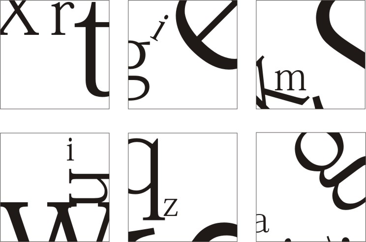
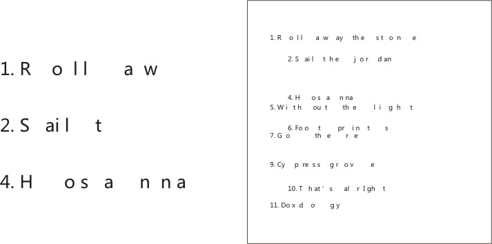
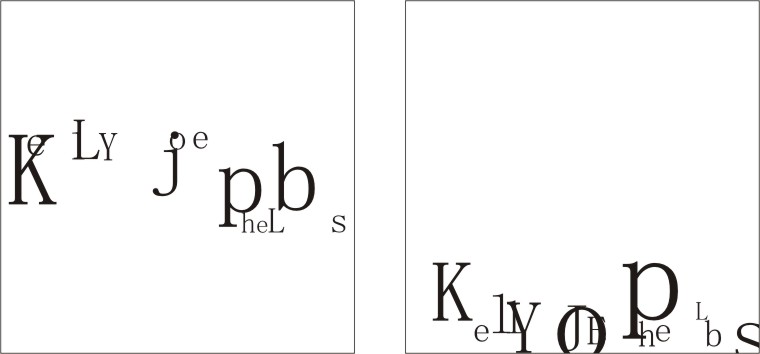
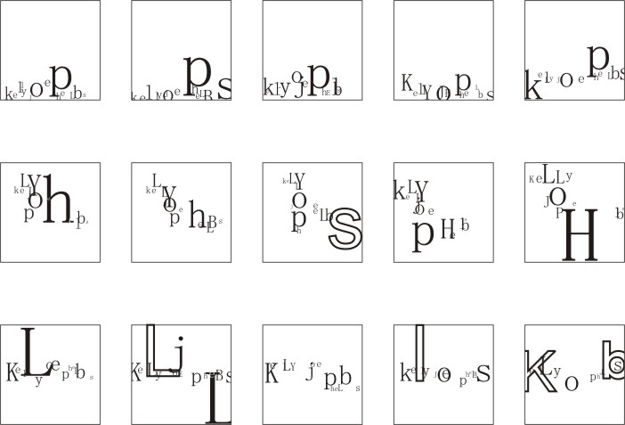
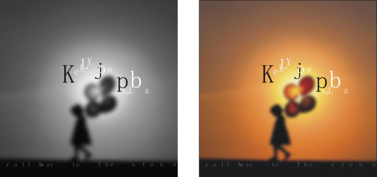
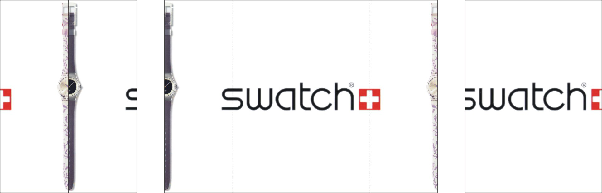
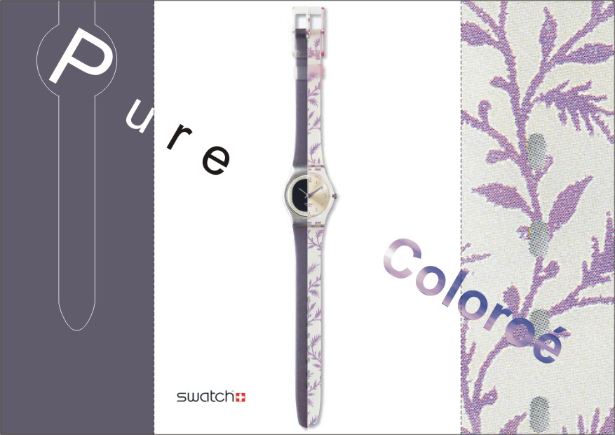
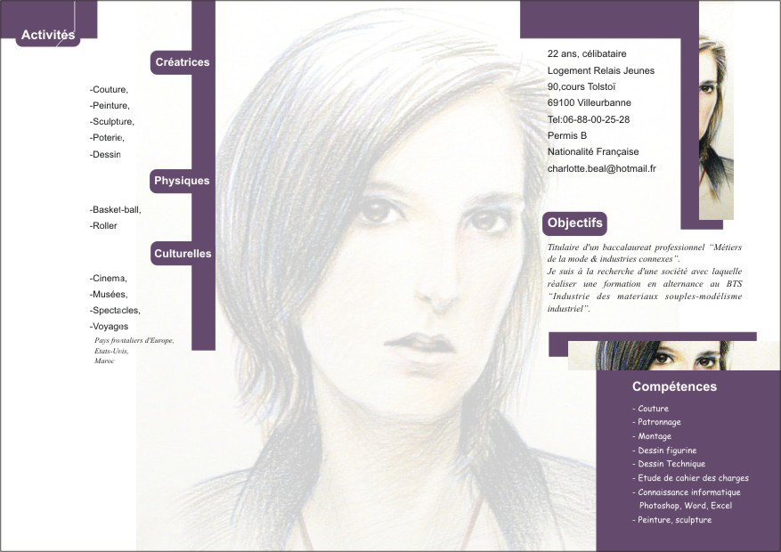
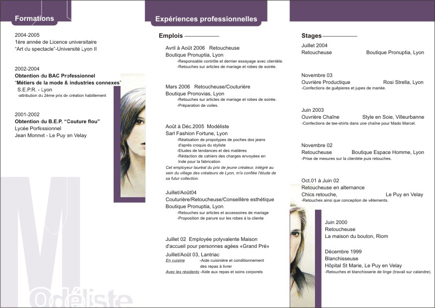
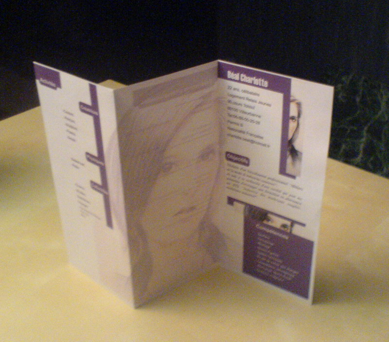

法国，里昂，2016年9月16日
选择几个字母，用嵌入对象并遮挡的方式，随机排列，更换字体样式，大小，位置，颜色，调整背景色等，甚至拆开字母的结构，可以作为装饰性背景。
例子一 :
更多例子 :
结论 ：排列组合的可能性千变万化，甚至不同语言文字之间都能擦出火花。
这招简称“断字”，基本上只能在英语体系的字母系文字上运用。
首先，随机增加字母之间的间距，也就是空格。
例子一 ：（CD歌曲列表）
很明显，文字变得无法阅读了，所以只能作为装饰，还是需要有一页专门正规重写一遍。
其次，可以随机调整字母的大小，字体，位置或者颜色等。
例子二 ：（歌手名字）
更多例子 :
选择其中一款和图片搭配的效果 :
华丽丽的分界线
结论 ：很明显，中文无法这样断字，因此只能用在英文字母系列的文字上，如果想保持可阅读性，断字不能做的太离谱，不然也是只能作为装饰。
顾名思义就是折起来的单页，尺寸A4大小，借一个名牌手表来练习
例子一 ：
例子二 ：
例子三 ：结合嵌入对象和断字制作的个人简历单张折页（凭此简历她获得了学校的录取）
  结论 ：法国蛮流行这种小折页的，可以在一张A4纸上分成六个面板分类排版不同的内容，常见于公交系统小地图，旅游局小地图，各种地区活动小简章，是比较适合小空间多内容的一个做法。缺点就是需要双面打印，每张都要压痕进行折叠，需要耐心制作。